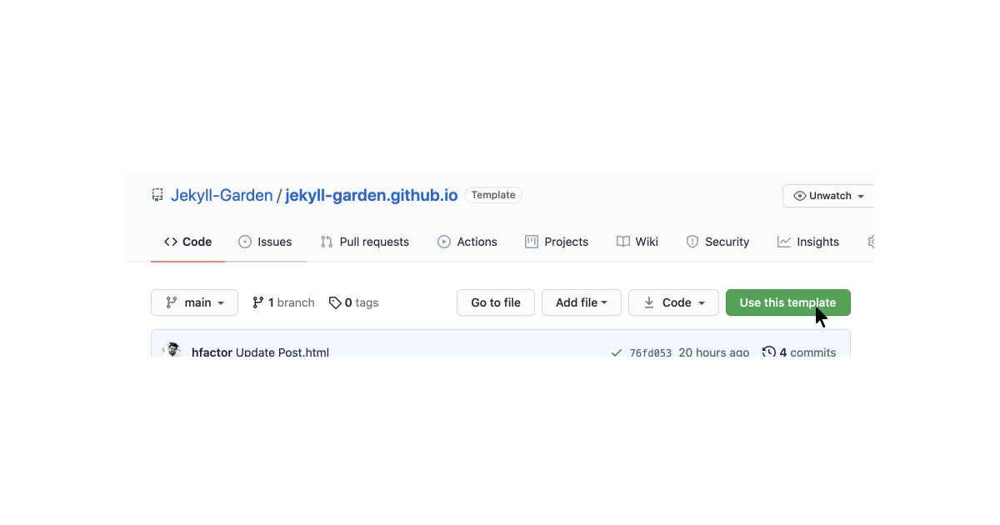
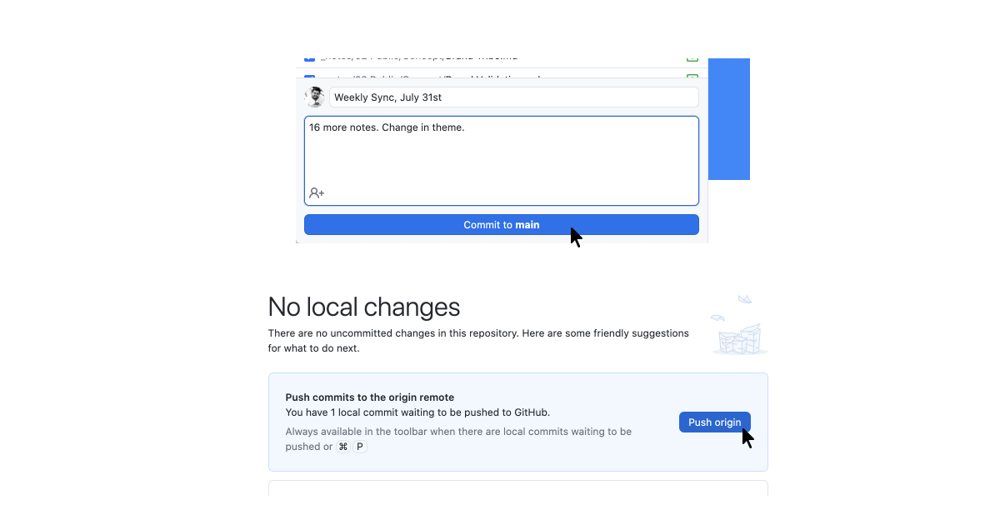

Jekyll garden is a theme over Jekyll that supports Obsidian formats, and few features. To install Jekyll to your server or local host, refer these documents. Docker file is also available.
Alternatively, you can use Github and Github Pages as your server. It's very simple and almost low-code. Here is how to do it.
Step 1: Sign-In to Github, visit the theme page and click on 'Use this Template'

Step 2: Name the forked repo as yourusername.github.io. My Github username is hfactor, hence it's hfactor.github.io

Step 3: Go to your repo's settings > pages and set the source to your main branch.

Step 4 (Optional): If you have a custom domain, set CNAME.
Configuring Your Jekyll.
Now you have Jekyll setup ready, go to _config.yml and set your configurations. Here you can do the following configurations :
- URL to set your hostname
- BASEURL to set your sub path (url/subpath/)
- Website Heading, Content, Copyright Year + Message
- Private Link - On hover message
- What all folders to exclude (Obsidian Template and all)
Edit these value via Github, and commit directly to Github, which will refresh the whole setup, and a Jekyll enivorment will be ready. You can visit the page by visiting yourusername.github.io
Syncing Github with Obsidian
Now you have your online publishing setup ready. It's time to build your local knowledge management using Obsidian. Here are the steps :
Step 1: Go to github and clone your repository to your machine. For this, you can use git-commands or install Github for desktop.

Step 2: Once you have successfully cloned the repository to your machine, Open the Obsidian app in your machine, and set the folder _notes inside the repository as your vault.

This is important, because Jekyll Garden can only fetch and publish notes from _notes folder.
Frontmatter
For all notes to work properly, we need to have three frontmatter values. Please make sure the front matter is written in between three lines. If you check any .md files in this repo, you will see something this.
---
title: Credits
feed: hide
date: 11-05-2022
permalink: /credits
format: list
---
Titleis the page title. It should be same as that of your Obsidian file title for our Wiki links to work. i.e, if file iscredits.mdtitle has to becredits- If you want to show the note on the feed, you should set
Feedasshow. It's an optional value, and the default value is set to hide. (To avoid publishing by mistake) dateis used to sort note in feed.permalinkis an optional value. Use it to set permanent URLsformat:listwill change the layout to a list with border, Refer CreditsCredits
Raghuveer, who created Simply Jekyll theme
Santosh Thottingal who introduced me to Digital Garden
Puttalu for OrgMode classes!
Team Obsidian for making obsidian a markdown based product
.... This is useful for Curated lists (Check my personal library ) or while building MoC.
Updating Digital Garden
Once you have enough notes, got to the Github Desktop app, commit the changes to main, and push the changes to Github. Github will update the pages! 
If you want to know my workflow or Obsidian folder structure, check here
Features
- Check Features to know theme features
Credits
- Check CreditsCredits
Raghuveer, who created Simply Jekyll theme
Santosh Thottingal who introduced me to Digital Garden
Puttalu for OrgMode classes!
Team Obsidian for making obsidian a markdown based product
...